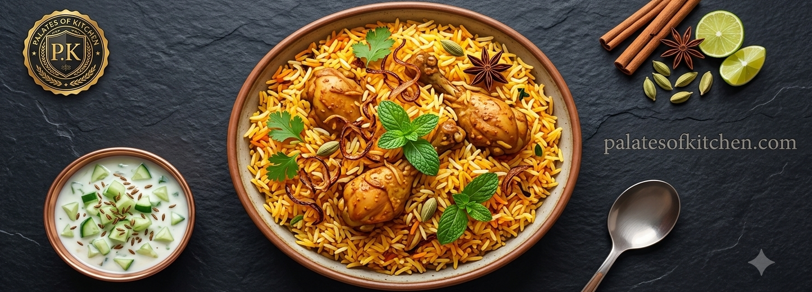

HomeMade Chicken Biryani
Biryani is one of the most eaten rice dish of Pakistan. It is made with perfectly seasoned basmati rice, tender spice chicken along with fragrant herbs.
It is the centerpiece for celebrations & family gatherings across Pakistan
Dish Preview

Ingredients Needed:
- 1 kg Basmati Rice (washed and soaked)
- 1 kg Chicken pieces
- 3 large sliced onions
- 2 tablespoons Ginger-Garlic paste
- Yogurt and tomatoes
- Biryani spice masala
- Extra Toppings & Side Items:
- Fried onions as toppings
- Fresh mint and coriander leaves
- Lemon slices
- Zeera yougurt Raita
- Fresh Salad
Cooking Steps:
- Boil the soaked Basmati rice in water until it is 80% cooked, then drain the water and set it aside.
- In a deep pot, fry the sliced onions until they turn golden brown. Remove some onions for garnishing for later.
- Add ginger & garlic paste, tomatoes, yogurt, boiled chicken, and the biryani spices to the pot. Cook thoroughly until the chicken is tender and oil separates.
- Create layers in the pot by placing a layer of cooked chicken curry at the bottom, followed by a layer of the boiled rice on top.
- Garnish the top layer with fresh mint, lemon slices, the saved fried onions, and a yellow food coloring.
- Cover the pot tightly with a lid and let it Dum on low heat for 15 minutes to fuse all the rich flavors together.
Learn More
Want to learn more about Biryani? You can check out the Youtube video urself. or watch some cooking online to see how it's made!